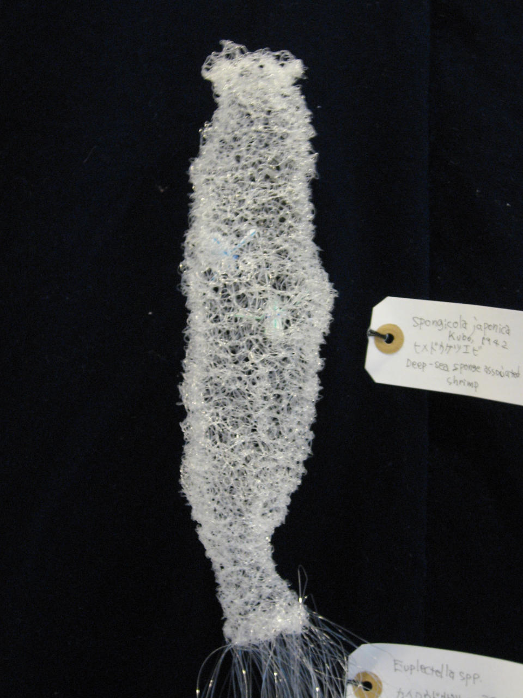
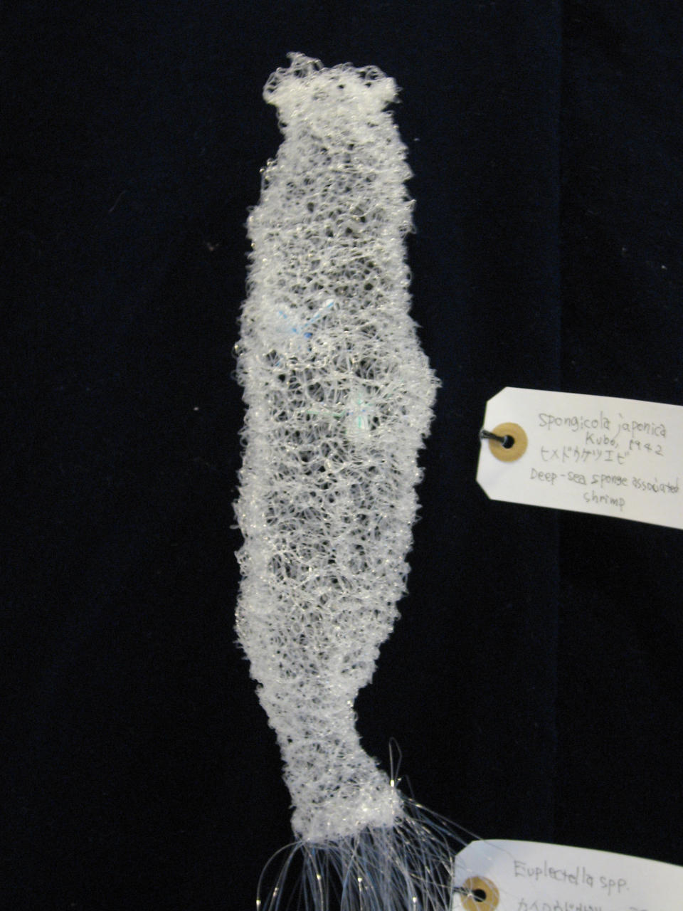
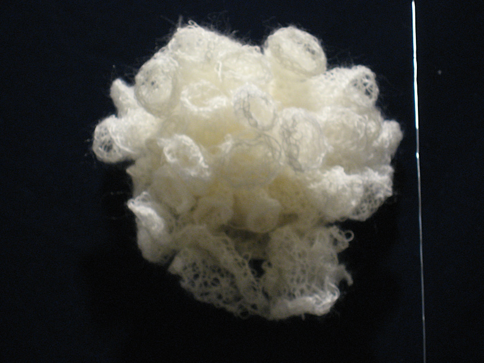
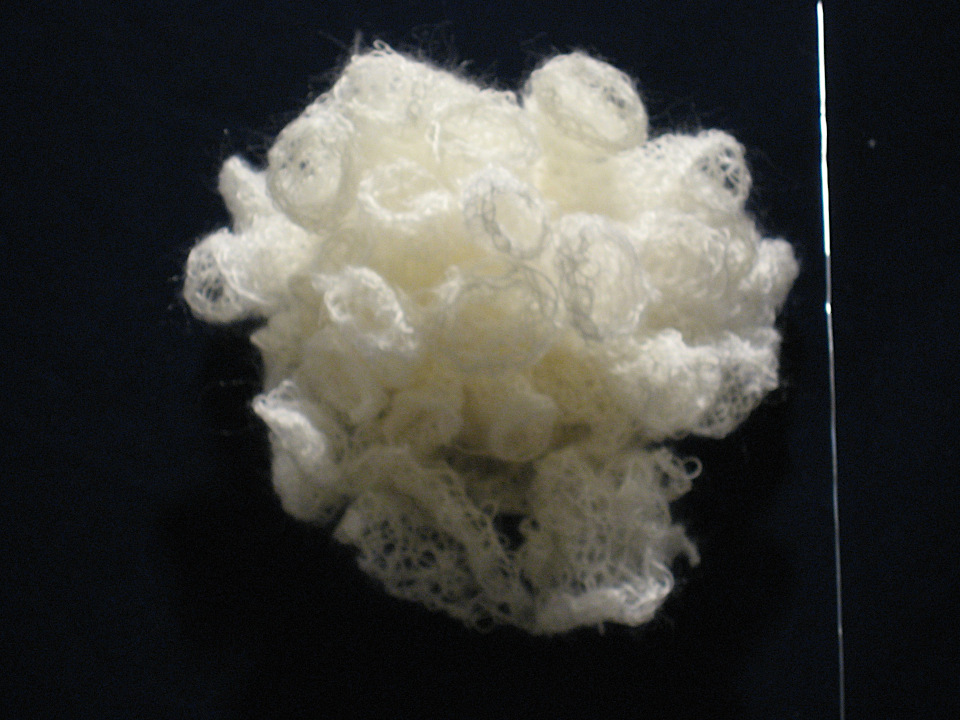

in the Water
The Holy Light Shines on the Sea - Dragon Snake God (Pelamis Platura)
神光照海 - 龍蛇神 (セグロウミヘビ)
mohair yarn, wire, wood
H 250 × W 180 × D 180 mm
2016
private collection
Man faced carp (Cyprinus carpio)
人面魚(鯉)
五言絶句の意味
遊於龍澤池 我是一鯉魚
人看従背肋 呼我人面魚
龍澤池に遊ぶ 我は一つの鯉魚なり
人は背中側から看(下ろし)て 我を人面魚と呼ぶ
Meaning of the poem of four lines,
each of five (Chinese) characters
↓
Playing in the Dragon's pond.
I am just a carp.
People see me down from dorsal view.
And call me a man_faced fish.
cotton thread, cloth
H 1000 × W 400 × D 70 mm
2017
Stonefish (Inimicus japonicus)
オニオコゼ
cotton thread, velvet
indian ink on japanese paper
H 320 × W 225mm
2013
drawing is from a private collection
Silver chimaera (Chimaera phantasma)
ギンザメ
cotton thread, cloth
H 500 × W 1500 mm
2015
private collection
Dried Sardine Sheet (Engraulis japonicus)
タタミイワシ
cotton thread, velvet
H 225 × W 320mm
2013
private collection
Pot Bellied Seahorse (Hippocampus kelloggi)
オオウミウマ
cotton thread, velvet
H 320 × W 225 mm
2013
private collection
Heikeopsis japonica
ヘイケガニ
cotton thread, velvet
H 225 × W 320mm
2013

Crustacean Zoea Larvae
甲殻類ゾエア幼生
cotton thread, velvet
H 320 × W 225 mm
2013
private collection
Water Flea (Daphnia pulex)
ミジンコ
cotton thread, velvet
H 320 × W 225 mm
2013
private collection
Volvox sp.
オオヒゲマワリ
cotton thread, velvet
H 272 × W 242mm
2013
Water Energy
水のエネルギー
mohair yarn, nylon yarn, cotton yarn, vinyl chloride, styrofoam, expanded polystyrene
H 3000 × W 8000 × D 1000 mm
2014
Top stair (inland) : Fuel Cell
上段（内陸）: 燃料電池
Middle stair (Sea surface) :
Wave Activated Power Generation
中段（海表）: 波力発電
Bottom stair (Deep sea):
3 Isotopes of Hydrogen
下段（深海）: 水素の３同位体
 

 

Our Inner Sea - Tribute to Dr. Isao Ijima
内なる海 - 飯島魁博士に捧ぐ -
mohair yarn, cotton thread, velvet
H 2,000 × W 2,500 × D 250 mm
2015
Putting a Barrier on the Sea
海の結界
cotton thread, velvet
H 2,700 × W 1,800 × D 2,400mm (dimensions variable)
2010